Hazel 游戏引擎笔记 022：ImGui 停靠与视口
本节来源：The Cherno 游戏引擎系列第 22 讲“ImGui 停靠与视口”，时长约 31 分 34 秒。
原课程与 Hazel 代码作者：The Cherno。代码参考提交：7c02b786。
本文由视频字幕重构、翻译并整理，不是官方教材；术语和代码以原视频及同期 Hazel 仓库为准。
本节目标
上一讲的 ImGui 集成是 Hazel 自己根据 ImGui GLFW 示例重写的：Hazel 事件被手动翻译为 ImGuiIO 状态，渲染也依赖复制进项目的 OpenGL3 示例代码。
这套实现适合理解原理，但 ImGui 正在快速增加 Docking 和 Viewports 等复杂功能。继续分叉维护会让 Hazel 越来越难追上上游。
本讲决定改成：
- 使用 ImGui docking 分支；
- 直接编译官方 GLFW 与 OpenGL3 后端；
- 尽量不修改官方后端代码；
- Hazel 只负责生命周期和 Begin / End 阶段；
- 让所有 Layer 都能通过
OnImGuiRender()绘制 UI。
graph LR
A[旧方案: 自己复制并维护 ImGui 输入/渲染] --> B[难以跟进上游]
B --> C[新方案: 使用官方后端代码]
C --> D[Hazel 只负责生命周期与渲染阶段]
D --> E[更容易合并 ImGui 更新]
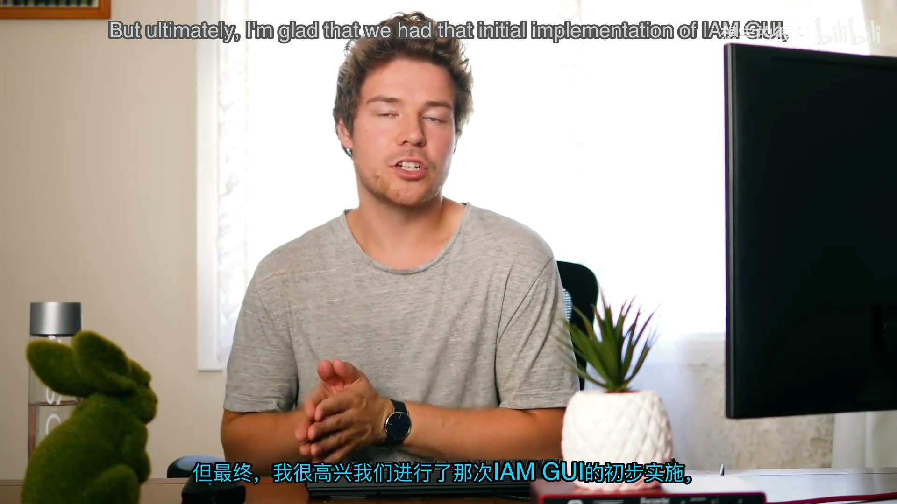
📷 旧 ImGui 集成包含较多自行维护的代码
回到原视频 (00:02:47)
1. Docking 与 Viewports 的价值
1.1 Docking：把窗口组织成 Dock Space
Docking 允许像 Visual Studio 一样拖动面板、拆分区域、形成标签页。Hazel 未来的关卡编辑器可以直接把场景、资源浏览器、属性面板和日志放进 Dock Space，而不需要引入 Qt、WPF 或 WinForms。
graph TD
A[Dock Space] --> B[中央 Scene View]
A --> C[侧边 Inspector]
A --> D[底部 Console]
A --> E[Asset Browser]
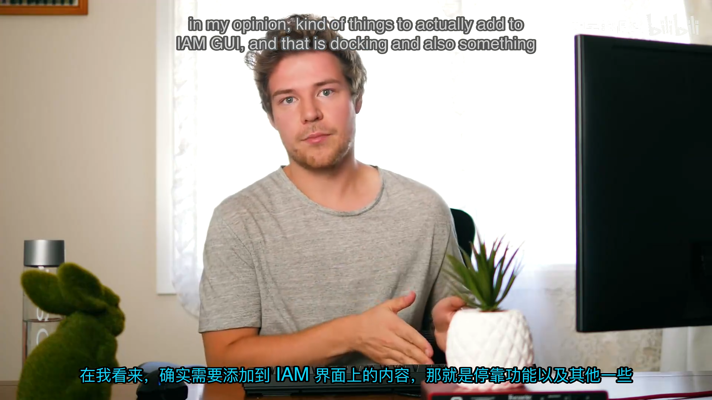
📷 Docking 可以把多个面板组织成专业编辑器布局
回到原视频 (00:04:48)
1.2 Viewports：窗口可拖出主应用
Viewports 让 ImGui 窗口可以离开主应用窗口。ImGui 会为它创建新的平台窗口和渲染上下文，使一个面板看起来像独立操作系统窗口。
这对多显示器开发非常实用。例如，可以把 Scene View 或 Console 拖到第二块屏幕，而主窗口继续保留编辑器布局。
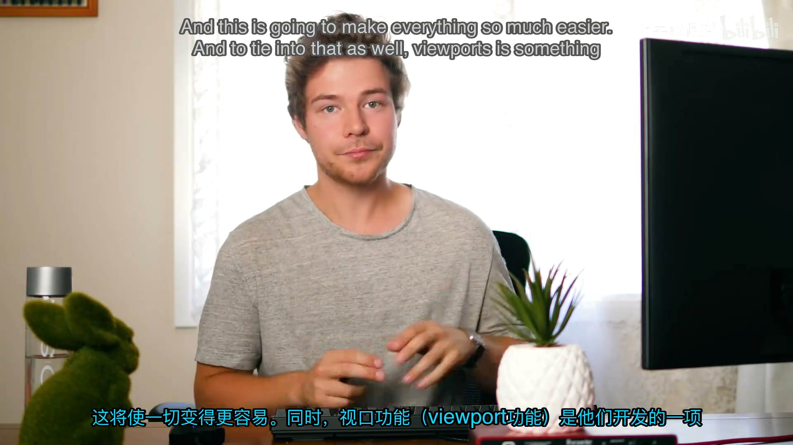
📷 Viewports 允许 ImGui 窗口脱离主应用窗口
回到原视频 (00:05:34)
1.3 为什么不再自己实现
Docking 分支尚未并入 ImGui master，功能仍在变化。如果 Hazel 复制后大量修改，每次上游更新都要手工合并。
因此本讲采用官方提供的：
imgui_impl_glfw.cpp；imgui_impl_opengl3.cpp；- 对应头文件。
目标是让 Hazel 与 ImGui 代码尽量不产生分叉。
2. 切换 ImGui 子模块到 docking 分支
(参考时间: 00:08:51)
ImGui 是 Git 子模块。先进入子模块目录：
cd Hazel/vendor/imgui
git status
git checkout docking
然后返回 Hazel 根目录，把子模块的新提交记录到主仓库：
cd ../../..
git status
git add Hazel/vendor/imgui
git commit -m "Switch ImGui to docking branch"
切分支的本质不是修改子模块内容，而是修改主仓库记录的子模块提交指针。
flowchart TD
A[Hazel 主仓库] --> B[记录 ImGui 子模块提交]
B --> C[进入 vendor/imgui]
C --> D[git checkout docking]
D --> E[子模块 HEAD 改变]
E --> F[主仓库 git add vendor/imgui]
F --> G[提交新的子模块指针]
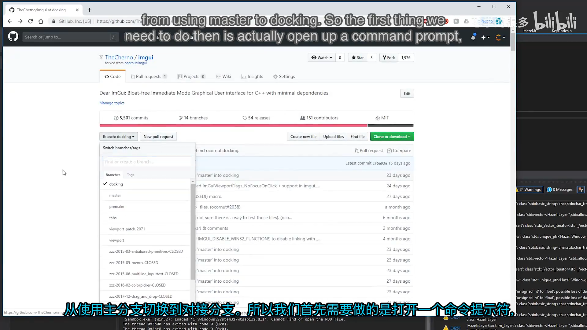
📷 在子模块中切换到 ImGui docking 分支
回到原视频 (00:08:51)
3. 编译官方 ImGui 后端
(参考时间: 00:10:34)
docking 分支中需要编译两个实现文件：
Hazel/vendor/imgui/examples/imgui_impl_glfw.cpp
Hazel/vendor/imgui/examples/imgui_impl_opengl3.cpp
不直接把两个文件逐项加入 Premake，而是新增一个统一编译单元：
Hazel/src/Hazel/ImGui/ImGuiBuild.cpp
内容如下：
#include "hzpch.h"
#define IMGUI_IMPL_OPENGL_LOADER_GLAD
#include "examples/imgui_impl_opengl3.cpp"
#include "examples/imgui_impl_glfw.cpp"
3.1 为什么使用包含 .cpp 的方式
这是一种小型 unity build：
- 只增加一个 Hazel 编译文件；
- 明确由 Hazel 控制宏定义；
- 不修改 ImGui 子模块；
- 需要调整 loader 时只改一处。
IMGUI_IMPL_OPENGL_LOADER_GLAD 告诉 ImGui 的 OpenGL3 后端使用 Glad 加载 OpenGL 函数，而不是使用它默认假设的加载器。
graph LR
A[ImGuiBuild.cpp] --> B[定义 GLAD loader]
B --> C[包含 imgui_impl_opengl3.cpp]
B --> D[包含 imgui_impl_glfw.cpp]
C --> E[OpenGL3 后端符号]
D --> F[GLFW 平台后端符号]
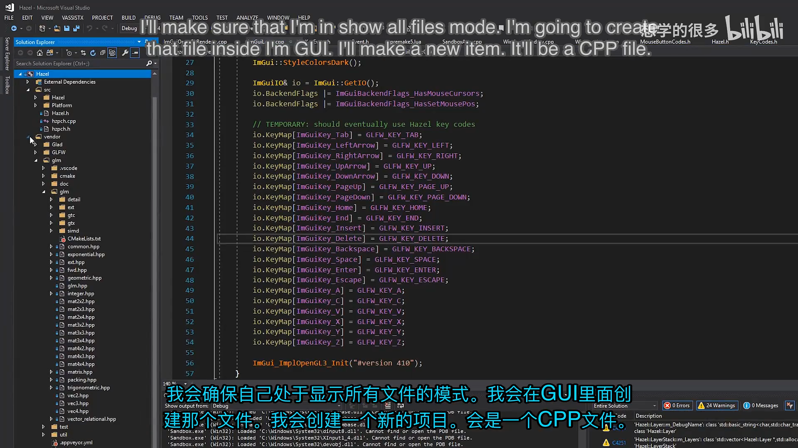
📷 通过 ImGuiBuild.cpp 编译官方 GLFW 与 OpenGL3 后端
回到原视频 (00:11:10)
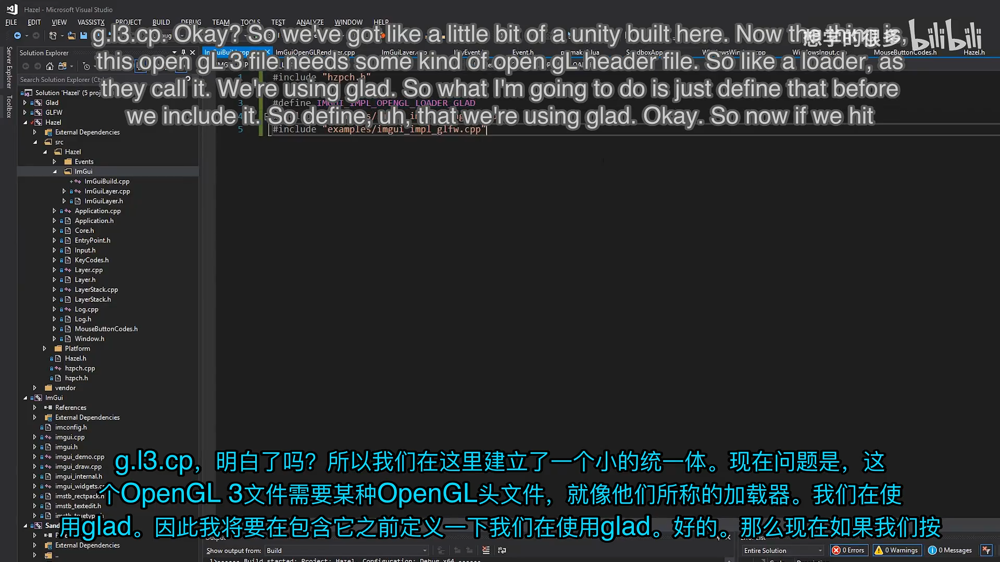
📷 定义 IMGUI_IMPL_OPENGL_LOADER_GLAD 后成功编译
回到原视频 (00:12:08)
旧的 Hazel/src/Platform/OpenGL/ImGuiOpenGLRenderer.* 随之删除，不再维护复制版 OpenGL 渲染器。
4. 重写 ImGuiLayer
(参考时间: 00:12:55)
4.1 删除手写事件翻译
旧 ImGuiLayer 包含大量：
- MouseButton pressed / released；
- MouseMoved / MouseScrolled；
- KeyPressed / KeyReleased / KeyTyped；
- WindowResize；
- 键盘映射与鼠标状态同步。
官方 GLFW 后端已经能处理这些输入，并会在 ImGui_ImplGlfw_NewFrame() 中同步状态。因此这些自定义处理代码全部删除。
graph TD
A[旧: Hazel Event] --> B[ImGuiLayer 手工转换]
B --> C[ImGuiIO]
D[新: GLFW 官方后端] --> C
E[ImGui_ImplGlfw_NewFrame] --> C
这不是放弃 Hazel 事件系统，而是避免把 ImGui 输入适配层重复维护在 Hazel 中。
4.2 ImGuiLayer 接口
class HAZEL_API ImGuiLayer : public Layer
{
public:
ImGuiLayer();
~ImGuiLayer();
virtual void OnAttach() override;
virtual void OnDetach() override;
virtual void OnImGuiRender() override;
void Begin();
void End();
private:
float m_Time = 0.0f;
};
OnUpdate() 和 OnEvent() 不再需要。真正由外层控制的是 Begin() 与 End()。
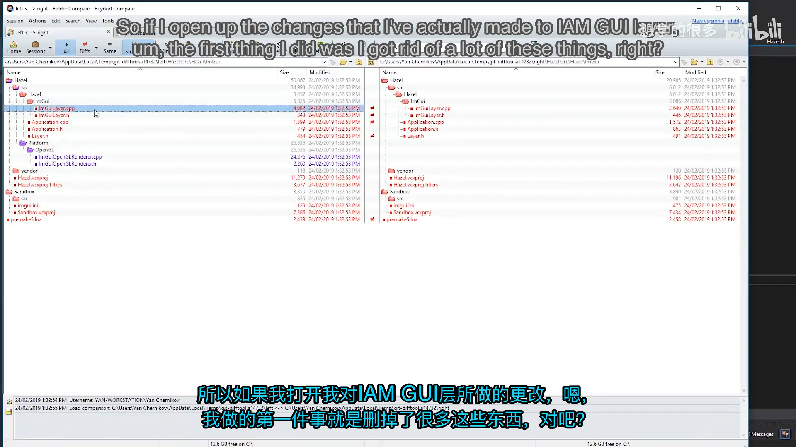
📷 重写 ImGuiLayer.h，移除手写事件函数
回到原视频 (00:12:55)
5. OnAttach：配置 ImGui 与官方后端
参考提交中的初始化：
void ImGuiLayer::OnAttach()
{
IMGUI_CHECKVERSION();
ImGui::CreateContext();
ImGuiIO& io = ImGui::GetIO();
io.ConfigFlags |=
ImGuiConfigFlags_NavEnableKeyboard;
io.ConfigFlags |=
ImGuiConfigFlags_DockingEnable;
io.ConfigFlags |=
ImGuiConfigFlags_ViewportsEnable;
ImGui::StyleColorsDark();
ImGuiStyle& style = ImGui::GetStyle();
if (io.ConfigFlags & ImGuiConfigFlags_ViewportsEnable)
{
style.WindowRounding = 0.0f;
style.Colors[ImGuiCol_WindowBg].w = 1.0f;
}
Application& app = Application::Get();
GLFWwindow* window =
static_cast<GLFWwindow*>(
app.GetWindow().GetNativeWindow());
ImGui_ImplGlfw_InitForOpenGL(window, true);
ImGui_ImplOpenGL3_Init("#version 410");
}
各配置项作用：
| Flag | 作用 |
|---|---|
NavEnableKeyboard |
允许键盘导航 ImGui |
DockingEnable |
启用窗口停靠 |
ViewportsEnable |
允许 ImGui 窗口创建独立平台窗口 |
启用 Viewports 后，主窗口与浮动平台窗口要保持统一外观，因此把：
style.WindowRounding = 0.0f;
style.Colors[ImGuiCol_WindowBg].w = 1.0f;
5.1 官方后端初始化
ImGui_ImplGlfw_InitForOpenGL(window, true);
ImGui_ImplOpenGL3_Init("#version 410");
第二个参数 true 表示由 ImGui 后端安装 GLFW 输入回调。此前的 Hazel 手写事件同步因此不再需要。
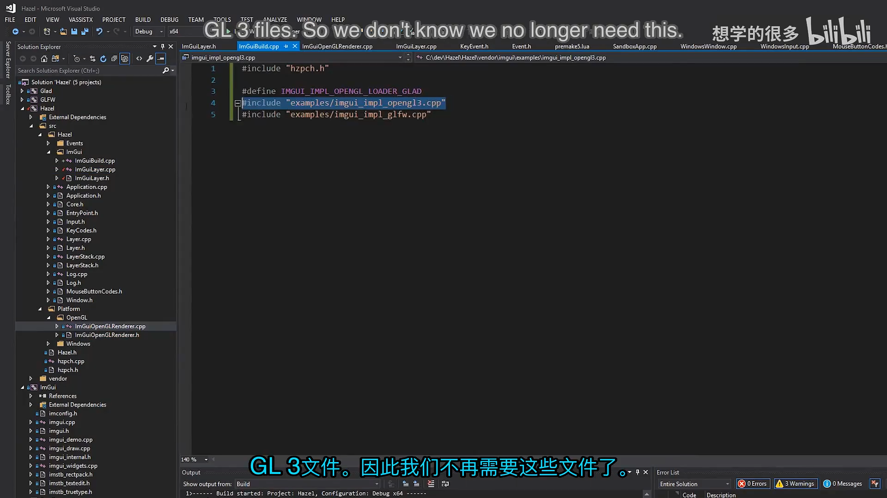
📷 在 OnAttach 中启用 Docking 与 Viewports 并初始化官方后端
回到原视频 (00:14:00)
6. Begin：开始一帧
void ImGuiLayer::Begin()
{
ImGui_ImplOpenGL3_NewFrame();
ImGui_ImplGlfw_NewFrame();
ImGui::NewFrame();
}
顺序很重要：
- 准备 OpenGL3 渲染后端；
- 准备 GLFW 平台后端并同步输入；
- 开始 ImGui 逻辑帧。
Begin 与 End 之间的这段时间，任何 Layer 都可以提交 ImGui UI。
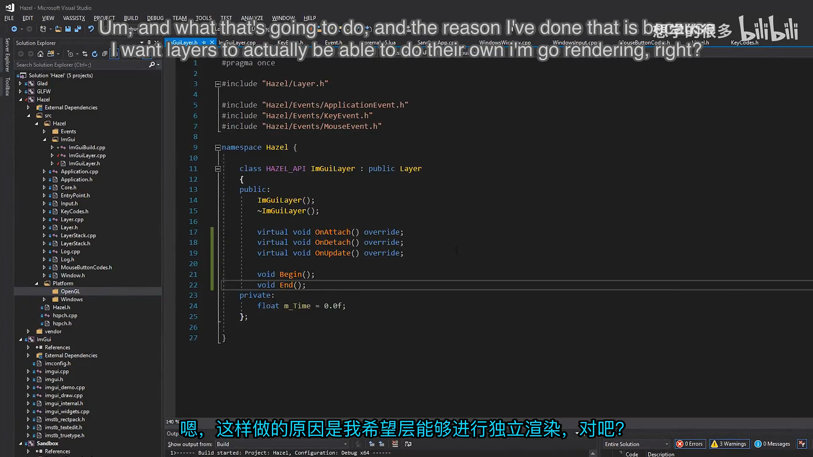
📷 Begin 阶段依次调用 OpenGL3、GLFW 和 ImGui NewFrame
回到原视频 (00:15:43)
7. OnImGuiRender：让 Layer 绘制 UI
在 Layer 基类增加：
virtual void OnImGuiRender() {}
之后 ExampleLayer 可以重写：
virtual void OnImGuiRender() override
{
static bool show = true;
ImGui::ShowDemoWindow(&show);
}
或者：
void OnImGuiRender() override
{
ImGui::Begin("Test");
ImGui::Text("Hello World");
ImGui::End();
}
Layer 不再需要知道：
ImGui::NewFrame();
ImGui::Render();
ImGui_ImplOpenGL3_RenderDrawData(...);
它只负责声明自己的 UI。
sequenceDiagram
participant A as Application
participant L as ImGuiLayer
participant G as Game Layer
A->>L: Begin()
A->>G: OnImGuiRender()
G->>G: ImGui::Begin/Text/End
A->>L: End()
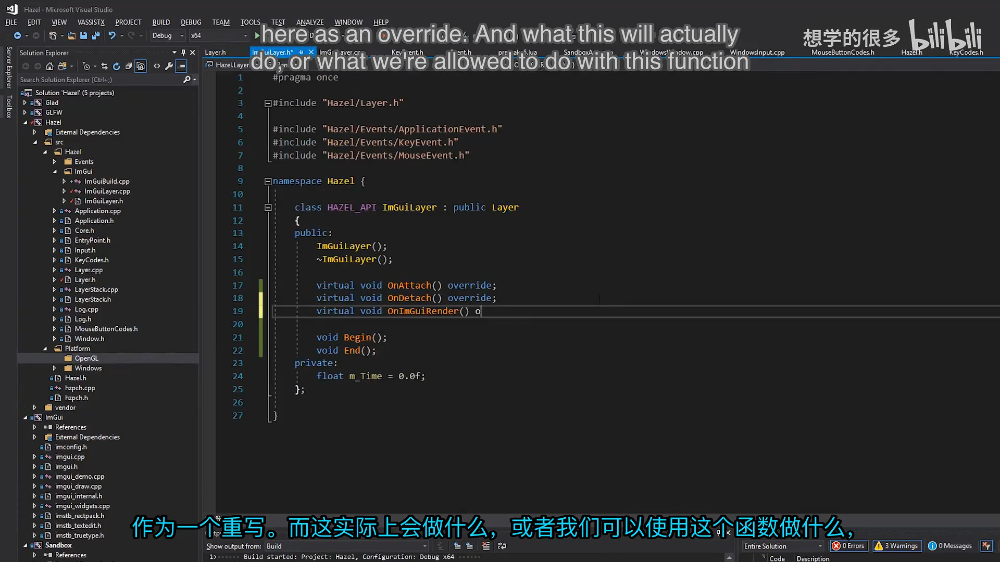
📷 Layer 通过 OnImGuiRender 声明窗口和控件
回到原视频 (00:19:00)
8. End：渲染 UI 与平台窗口
(参考时间: 00:17:27)
void ImGuiLayer::End()
{
ImGuiIO& io = ImGui::GetIO();
Application& app = Application::Get();
io.DisplaySize = ImVec2(
app.GetWindow().GetWidth(),
app.GetWindow().GetHeight());
ImGui::Render();
ImGui_ImplOpenGL3_RenderDrawData(
ImGui::GetDrawData());
if (io.ConfigFlags & ImGuiConfigFlags_ViewportsEnable)
{
GLFWwindow* backup_current_context =
glfwGetCurrentContext();
ImGui::UpdatePlatformWindows();
ImGui::RenderPlatformWindowsDefault();
glfwMakeContextCurrent(backup_current_context);
}
}
8.1 设置 DisplaySize
主 ImGui 上下文需要知道主窗口尺寸：
io.DisplaySize = ImVec2(width, height);
8.2 渲染主窗口 DrawData
ImGui::Render();
ImGui_ImplOpenGL3_RenderDrawData(
ImGui::GetDrawData());
8.3 处理浮动平台窗口
ImGui::UpdatePlatformWindows();
ImGui::RenderPlatformWindowsDefault();
这些调用会更新并渲染被拖出主窗口的 ImGui 平台窗口。
渲染平台窗口时可能切换 OpenGL 上下文。为了不影响 Hazel 后续渲染，需要先保存并恢复原来的上下文：
GLFWwindow* backup_current_context =
glfwGetCurrentContext();
// ...
glfwMakeContextCurrent(backup_current_context);
flowchart TD
A[ImGui::Render] --> B[提交主窗口 DrawData]
B --> C{ViewportsEnable?}
C -- 否 --> D[End 完成]
C -- 是 --> E[保存当前 GLFW 上下文]
E --> F[UpdatePlatformWindows]
F --> G[RenderPlatformWindowsDefault]
G --> H[恢复原上下文]
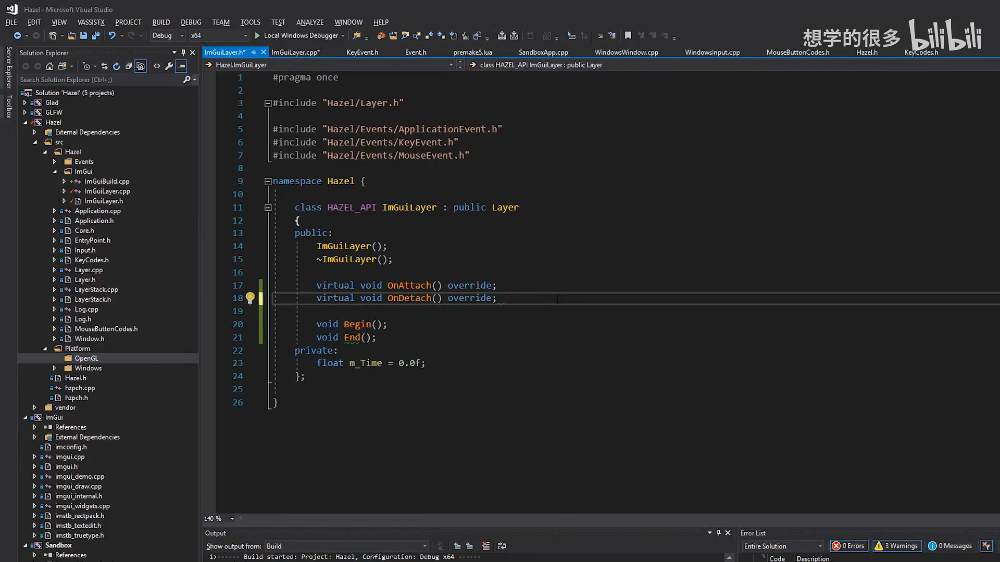
📷 End 阶段渲染主 DrawData 并处理浮动平台窗口
回到原视频 (00:17:27)
9. 由 Application 统一拥有 ImGuiLayer
(参考时间: 00:20:00)
旧 Sandbox 手动执行：
PushOverlay(new Hazel::ImGuiLayer());
新设计中，ImGui 是 Hazel Runtime 的基础 UI 设施，因此由 Application 自动创建：
m_ImGuiLayer = new ImGuiLayer();
PushOverlay(m_ImGuiLayer);
Sandbox 不再需要创建 ImGuiLayer。
9.1 所有权必须与 LayerStack 一致
视频中最初尝试把 ImGuiLayer 写成 std::unique_ptr，随后发现不正确：PushOverlay() 会把指针交给 LayerStack，LayerStack 负责最终删除。
因此成员声明应保持裸指针：
ImGuiLayer* m_ImGuiLayer;
这里使用裸指针不是忽略所有权，而是因为所有权已经明确转移给 LayerStack。
graph LR
A[Application] --> B[创建 ImGuiLayer]
B --> C[PushOverlay]
C --> D[LayerStack 持有所有权]
D --> E[LayerStack 析构时删除]
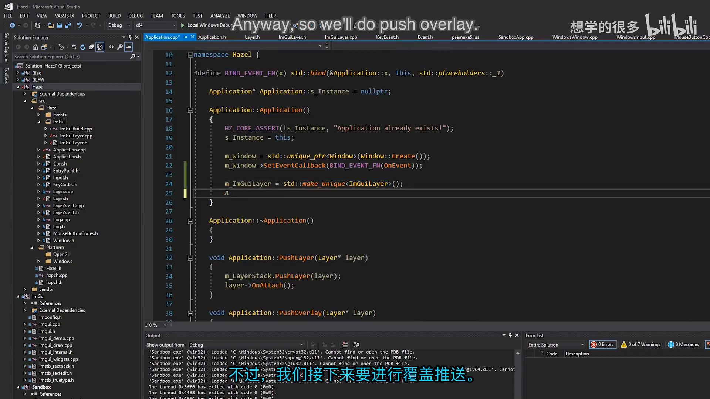
📷 Application 自动创建并把 ImGuiLayer 推入 Overlay
回到原视频 (00:23:30)
9.2 Application 主循环
while (m_Running)
{
glClearColor(1, 0, 1, 1);
glClear(GL_COLOR_BUFFER_BIT);
for (Layer* layer : m_LayerStack)
layer->OnUpdate();
m_ImGuiLayer->Begin();
for (Layer* layer : m_LayerStack)
layer->OnImGuiRender();
m_ImGuiLayer->End();
m_Window->OnUpdate();
}
所有 Layer 的 ImGui 代码都夹在同一组 Begin / End 之间。
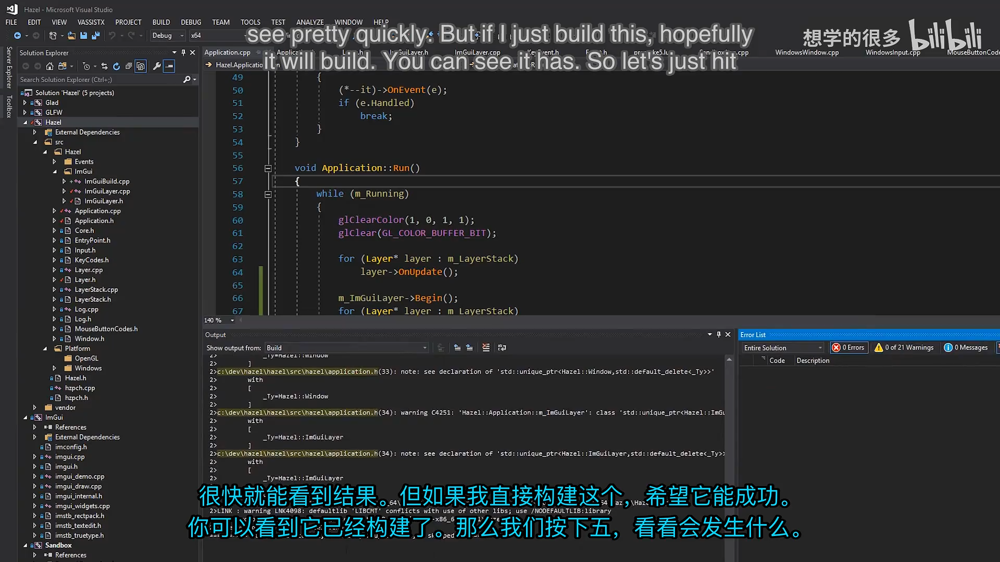
📷 Application 主循环调用所有 Layer 的 OnImGuiRender
回到原视频 (00:22:33)
10. 修复 LayerStack 迭代器失效
(参考时间: 00:24:24)
旧 LayerStack 保存一个迭代器：
std::vector<Layer*>::iterator m_LayerInsert;
当 std::vector 扩容时，已有迭代器会失效。继续使用它会产生未定义行为。
新实现改用索引：
unsigned int m_LayerInsertIndex = 0;
PushLayer：
void LayerStack::PushLayer(Layer* layer)
{
m_Layers.emplace(
m_Layers.begin() + m_LayerInsertIndex,
layer);
m_LayerInsertIndex++;
}
PopLayer：
m_LayerInsertIndex--;
索引不会因为 vector 重新分配而失效，因此比保存迭代器更稳健。
flowchart TD
A[保存 vector iterator] --> B[vector 扩容]
B --> C[旧 iterator 失效]
C --> D[未定义行为]
E[保存 unsigned index] --> F[vector 扩容]
F --> G[索引仍有效]
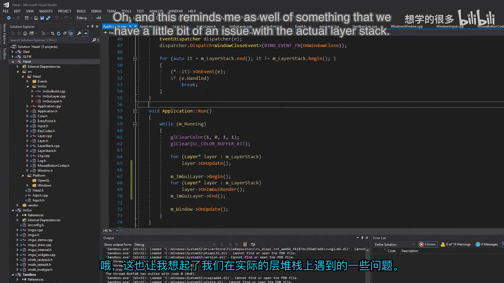
📷 把 LayerStack 的插入迭代器改为无符号索引
回到原视频 (00:24:24)
11. 为 Sandbox 暴露 ImGui 头文件
(参考时间: 00:28:00)
Sandbox 希望直接写：
#include "imgui/imgui.h"
因此 Premake 的 Sandbox includedirs 增加：
"Hazel/vendor"
这样 imgui/imgui.h 可以从 vendor 根目录解析。
重新生成项目后，Sandbox 就能声明自己的 ImGui 面板。
graph LR
A[Sandbox] --> B["#include imgui/imgui.h"]
B --> C[Hazel/vendor]
C --> D[Hazel/vendor/imgui]
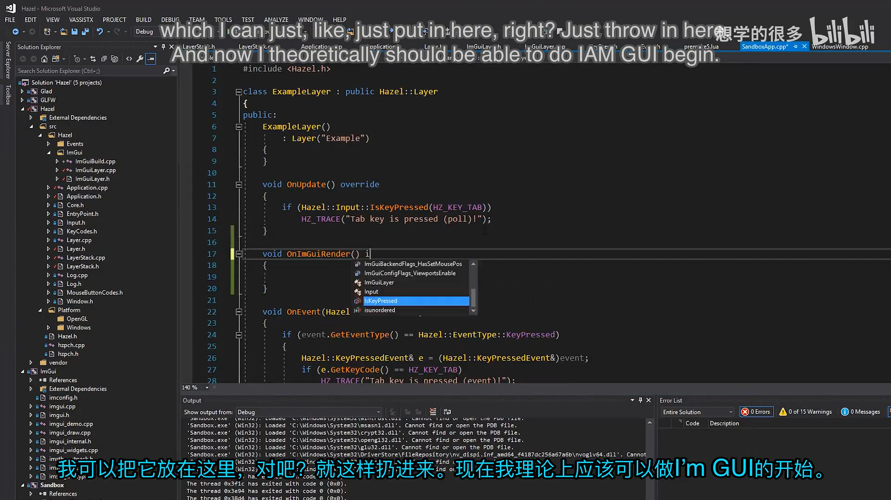
📷 在 Sandbox 中包含 imgui/imgui.h 并增加 vendor 路径
回到原视频 (00:28:00)
12. 新功能演示
(参考时间: 00:26:18)
12.1 多视口
ImGui Demo Window 可以被直接拖出主应用窗口。松开后，它变成独立窗口；拖回主窗口后重新嵌入。
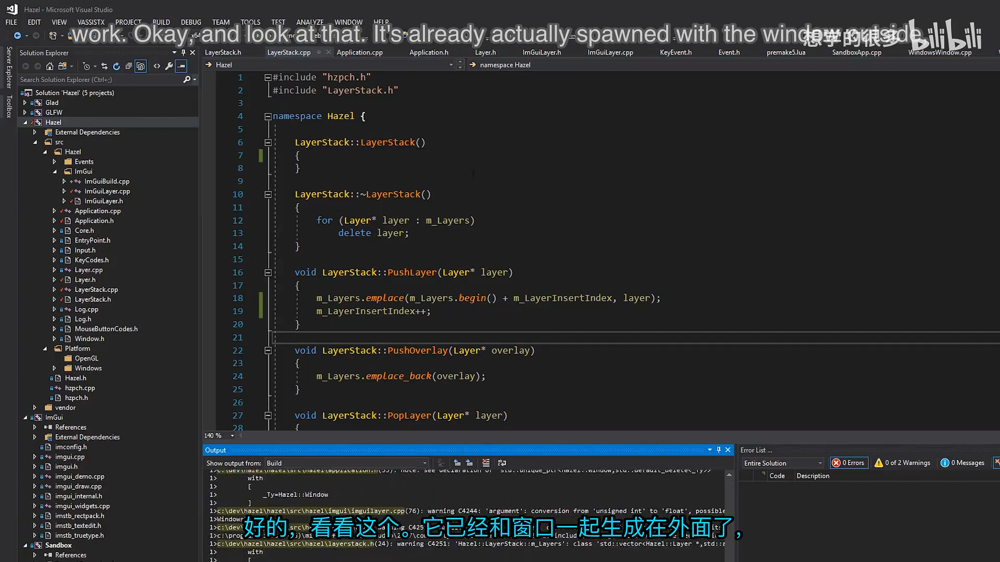
📷 ImGui 窗口可以拖出主应用形成独立平台窗口
回到原视频 (00:26:18)
还可以同时打开 Log 等窗口，并把它们放在不同显示器或不同位置。
12.2 Dock Space
打开 Examples -> DockSpace 后得到一个可停靠区域。把 Demo、Log、Console 拖入后，界面已经接近 Visual Studio 一类编辑器。
这为 Hazel 未来直接构建关卡编辑器提供了基础。
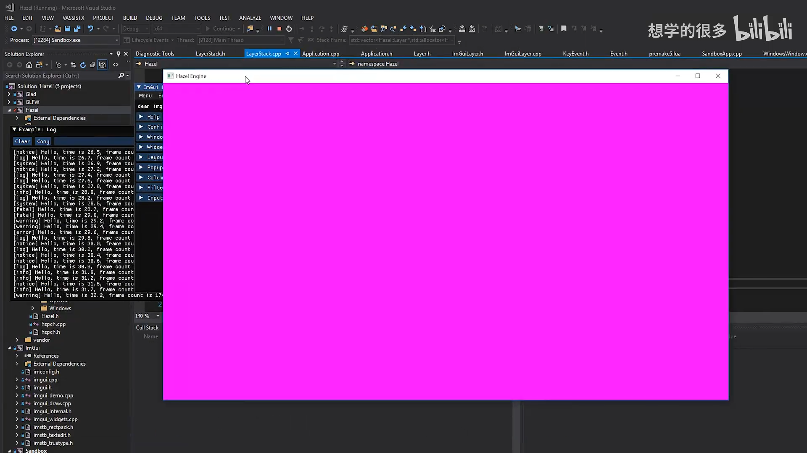
📷 通过 DockSpace 把 Log、Console 等面板组合成编辑器布局
回到原视频 (00:26:49)
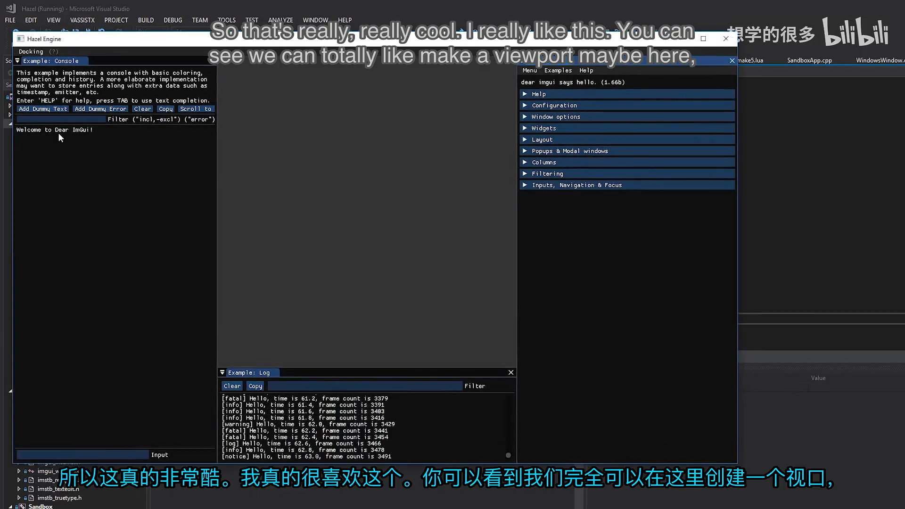
📷 Docking 与 Viewports 结合后可形成完整工作区
回到原视频 (00:27:20)
13. 视频末尾的练习：DLL 符号问题
(参考时间: 00:29:37)
Sandbox 加入自己的 ImGui 窗口后，编译成功，但链接阶段出现 Error：
unresolved external symbol ...
ImGui::Begin
ImGui::End
当前结构大致是：
graph LR
A[ImGui 静态库] --> B[Hazel.dll]
B --> C[Sandbox.exe]
问题不在于 ImGui 没有被编译，而在于 Sandbox 直接调用的 ImGui::Begin()、ImGui::End() 等符号没有从 Hazel DLL 中导出。
视频把这个问题留作作业，没有在本集给出最终修复。可选思考方向包括：
- 调整导入/导出机制；
- 调整 ImGui 与 Hazel 的链接方式；
- 避免让 Sandbox 直接链接到未导出的 ImGui 符号。
编者说明：这里列出的是问题分析方向，不是视频中已经确定的解决方案。实际提交在这次视频对应的 7c02b786 之后仍继续调整。
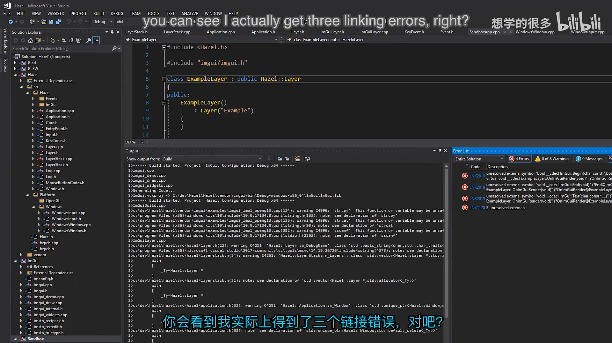
📷 Sandbox 链接 ImGui Begin/End 时出现未解析外部符号
回到原视频 (00:29:37)
14. 本节结论
本讲把 Hazel 的 ImGui 集成升级为 Docking 与 Viewports：
- ImGui 子模块切换到 docking 分支；
- 使用官方 GLFW 与 OpenGL3 后端；
- 通过
ImGuiBuild.cpp编译官方后端实现； - 删除自定义 ImGui 输入事件同步与 OpenGL renderer；
ImGuiLayer改为OnAttach、OnDetach、Begin、End、OnImGuiRender；- 启用键盘导航、Docking 和 Viewports；
- Application 自动创建并持有 ImGuiLayer；
- 所有 Layer 都能通过
OnImGuiRender()绘制 UI； - End 阶段处理主窗口 DrawData 和浮动平台窗口；
- LayerStack 用索引替代易失效的迭代器；
- 演示了多视口、Dock Space 和编辑器式布局；
- 留下 DLL 符号导出问题作为练习。
这次重构的重点不是增加几个界面，而是调整维护边界：Hazel 不再复制 ImGui 的内部实现，而是依赖官方后端，让上游更新可以更容易地进入引擎。